Class 9 Science Notes
Interactive CBSE Class 9 Science notes from Notesflix 101. They follow the new NCERT textbook Exploration (2026-27). Each chapter is broken into short parts with easy explanations, picture stories, flash cards, quizzes and board-style exam questions with model answers. 13 of 25 parts are free to read with no password (Part 1 of every chapter). The other parts open with a password from Notesflix 101.
Chapters
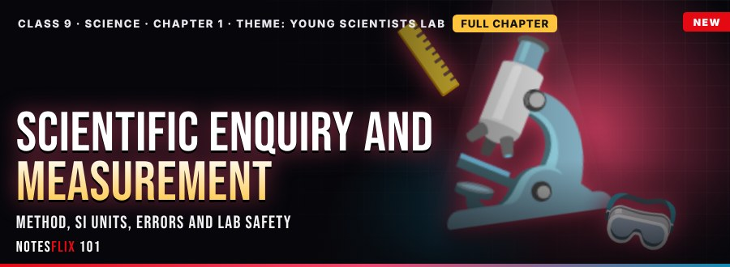
Foundations 1: Scientific Enquiry and Measurement
The scientific method, SI units, instruments, errors and lab safety
- Young Scientists LabFREE — The scientific method and variables, SI units and instruments, accuracy, precision and errors, and laboratory safety, with converters, an error calculator, sorting games and a boss battle. (35 min)
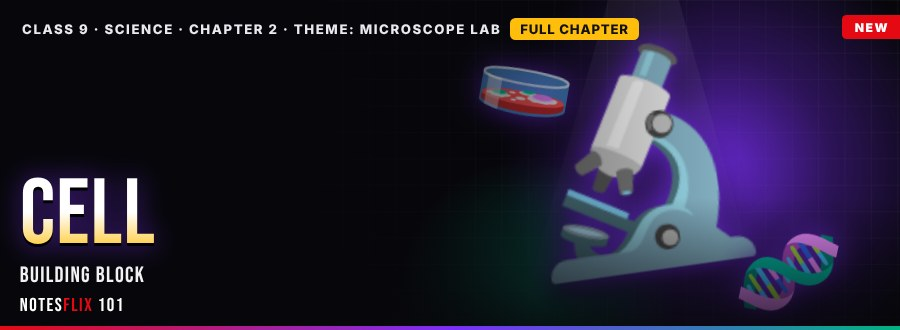
Biology 2: Cell: The Building Block of Life
Cell theory, organelles, plant vs animal
- Microscope Lab · Part 1FREE — Discovery of the cell, prokaryotic and eukaryotic cells, organelles and their functions, plant and animal cells, with a magnification calculator, sorting games, memory matches, true/false rushes and a boss battle. (35 min)
- Cell Fortress · Part 2PASSWORD — Plasma membrane, diffusion and osmosis with hypotonic, hypertonic and isotonic solutions, mitosis and meiosis with a chromosome counter, cancer and recent advances, with games and a boss battle. (35 min)
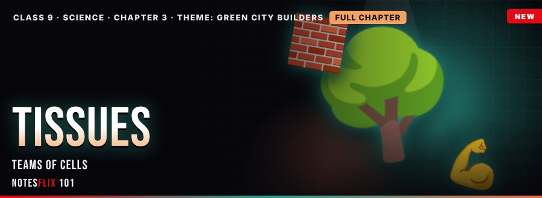
Biology 3: Tissues in Action
Plant tissues, animal tissues, muscles and bones
- Green City · Part 1FREE — Meristematic tissue, simple permanent tissues, xylem and phloem, with a tissue identifier, sorting games, memory matches, true/false rushes and a boss battle. (35 min)
- Body Squad · Part 2PASSWORD — Epithelial, connective, muscular and nervous tissue, the skeleton, joints and how to keep fit, with a heartbeat calculator, joint finder, sorting games, memory matches and a boss battle. (35 min)
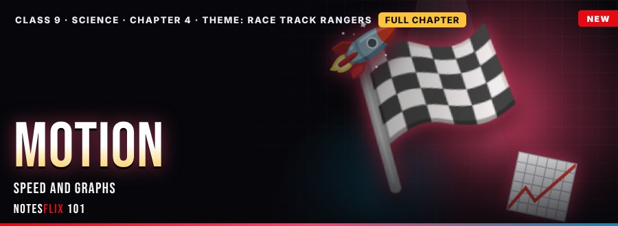
Physics 4: Describing Motion Around Us
Speed, velocity, acceleration, graphs and equations
- Race Track · Part 1FREE — Distance and displacement, speed and velocity, acceleration, and distance–time and velocity–time graphs with live graph playgrounds, solvers, sorting games, memory matches and a boss battle. (35 min)
- Stunt Arena · Part 2PASSWORD — The three equations of motion from the velocity–time graph, step-by-step problem solving, braking and free fall, and uniform circular motion, with solvers, a graph playground, sorting games and a boss battle. (35 min)
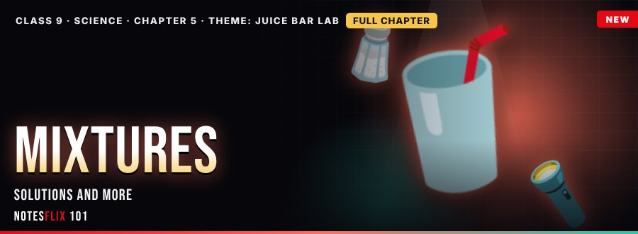
Chemistry 5: Exploring Mixtures and their Separation
Solutions, colloids, concentration and separation
- Juice Bar Lab · Part 1FREE — Pure substances and mixtures, solutions, colloids and suspensions with the Tyndall effect, and concentration by mass and volume percent, with solvers, sorting games, memory matches and a boss battle. (35 min)
- Clean Water Crew · Part 2PASSWORD — Filtration, evaporation, centrifugation, sublimation, crystallisation, distillation, coagulation and paper chromatography with Rf calculations, method finders, sorting games and a boss battle. (35 min)
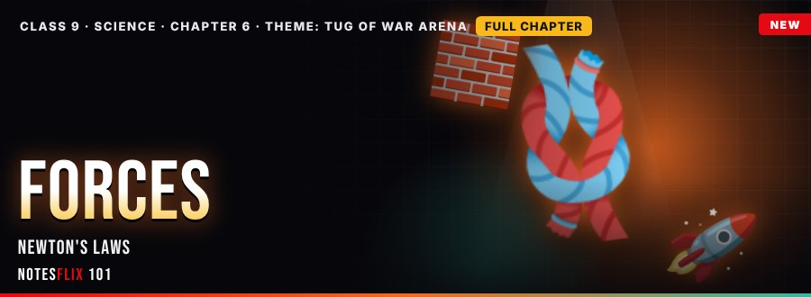
Physics 6: How Forces Affect Motion
Force, inertia, friction, momentum and Newton's laws
- Tug of War · Part 1FREE — Force, balanced and unbalanced forces, Newton's first law and inertia, and friction with a net-force calculator, a will-it-move simulator, sorting games, memory matches and a boss battle. (35 min)
- Rocket Pad · Part 2PASSWORD — Momentum, Newton's second law and F = ma, the third law with rockets and recoil, and conservation of momentum in collisions, with solvers, a graph playground, sorting games and a boss battle. (35 min)
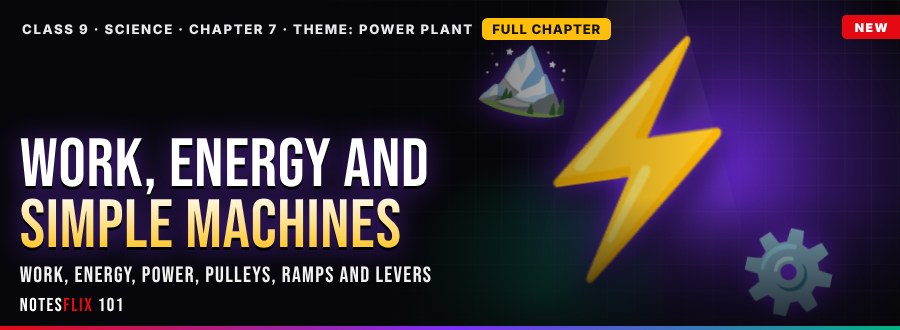
Physics 7: Work, Energy and Simple Machines
Work, energy, power, pulleys, ramps and levers
- Power Plant · Part 1FREE — Work and the joule, kinetic and potential energy, conservation of energy and power with the watt, with calculators, a KE graph playground, sorting games and a boss battle. (35 min)
- Workshop · Part 2PASSWORD — Levers and their three classes, fixed and movable pulleys, inclined planes, mechanical advantage and efficiency, with calculators, a graph playground, sorting games and a boss battle. (35 min)
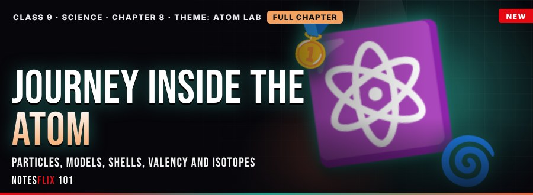
Chemistry 8: Journey Inside the Atom
Particles, models, shells, valency, isotopes and isobars
- Atom Lab · Part 1FREE — Electrons, protons and neutrons, Thomson's plum pudding, Rutherford's gold foil experiment and Bohr's shells, with calculators, sorting games and a boss battle. (35 min)
- Shell Builders · Part 2PASSWORD — Atomic number and mass number, electron shells up to calcium, valency, isotopes, isobars and their uses, with an atom counter, configuration builder, sorting games and a boss battle. (35 min)
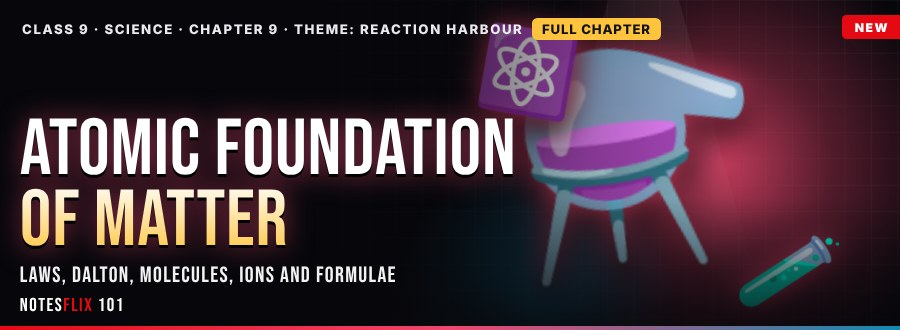
Chemistry 9: Atomic Foundation of Matter
Laws of combination, Dalton, molecules, ions, formulae and molecular mass
- Reaction Harbour · Part 1FREE — Conservation of mass, constant proportions, Dalton's atomic theory, molecules, atomicity and ions, with calculators, sorting games and a boss battle. (35 min)
- Formula Foundry · Part 2PASSWORD — Chemical symbols and valency, the criss-cross method, molecular mass and formula unit mass, with a formula maker, mass calculators, sorting games and a boss battle. (35 min)
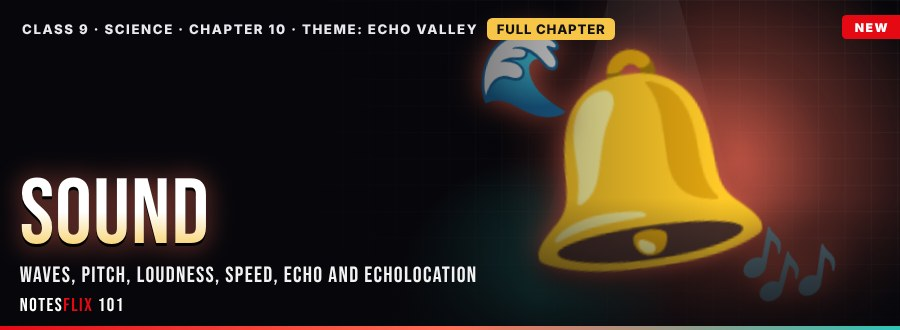
Physics 10: Sound
Waves, pitch, loudness, speed, echo and echolocation
- Echo Valley · Part 1FREE — How sound is produced, longitudinal waves with compressions and rarefactions, wavelength, frequency, amplitude and v = fλ, with a wave graph playground, calculators, sorting games and a boss battle. (35 min)
- Sonar Squad · Part 2PASSWORD — Pitch and loudness, speed of sound in different media, echo and the 17 m rule, reverberation, ultrasound, echolocation and SONAR, with distance calculators, sorting games and a boss battle. (35 min)
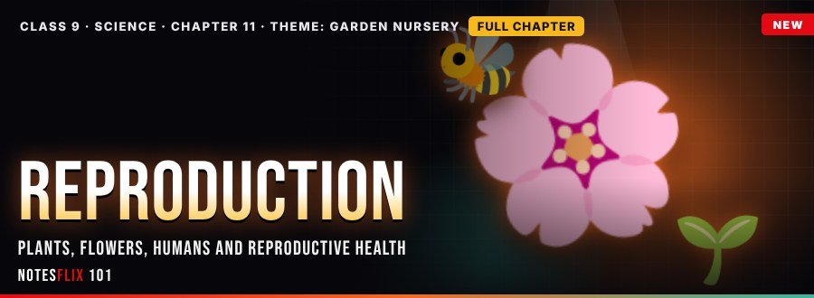
Biology 11: Reproduction
Asexual and sexual reproduction, flowers, humans and reproductive health
- Garden Nursery · Part 1FREE — Why organisms reproduce, asexual methods, sexual reproduction and flower parts, pollination, fertilisation and seed dispersal, with a fission counter, sorting games and a boss battle. (35 min)
- Life Story Lab · Part 2PASSWORD — The human reproductive systems, fertilisation, pregnancy and birth, the menstrual cycle, reproductive health and family planning, with calculators, sorting games and a boss battle. (35 min)
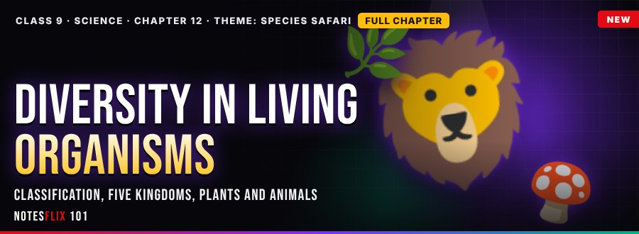
Biology 12: Diversity in Living Organisms
Classification, five kingdoms, plants, animals and naming
- Species Safari · Part 1FREE — Why we classify, the taxonomic hierarchy, Whittaker's five kingdoms and binomial nomenclature, with a kingdom finder, a name builder, sorting games and a boss battle. (35 min)
- Ark Explorers · Part 2PASSWORD — The five plant groups, invertebrate phyla and vertebrate classes, viruses and the three-domain system, with group finders, sorting games and a boss battle. (35 min)
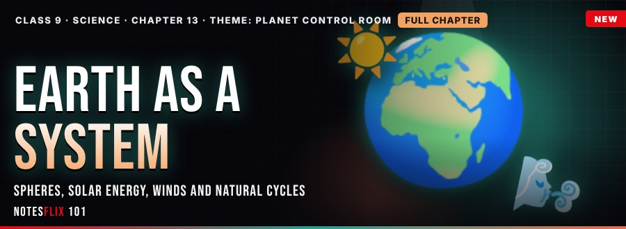
Earth Science 13: Earth as a System
Spheres, solar energy, winds, water, carbon, nitrogen and oxygen cycles
- Planet Control Room · Part 1FREE — The five spheres of Earth, solar energy and the electromagnetic spectrum, differential heating, winds and sea and land breezes, with a heating graph, calculators, sorting games and a boss battle. (35 min)
- Cycle City · Part 2PASSWORD — The water, carbon, oxygen and nitrogen cycles and the effect of human activities such as burning fuels and deforestation, with calculators, sorting games and a boss battle. (35 min)
Frequently asked questions
Are the Class 9 Science notes free?
13 of 25 parts are free to read with no password (Part 1 of every chapter). The other parts open with a password from Notesflix 101.
Which syllabus do these Class 9 Science notes follow?
They follow the new NCERT textbook Exploration (2026-27). Every chapter is split into short interactive parts with simple explanations, flash cards, quizzes and board-style exam questions with model answers.
How many chapters are covered?
13 chapters: Scientific Enquiry and Measurement; Cell: The Building Block of Life; Tissues in Action; Describing Motion Around Us; Exploring Mixtures and their Separation; How Forces Affect Motion; Work, Energy and Simple Machines; Journey Inside the Atom; Atomic Foundation of Matter; Sound; Reproduction; Diversity in Living Organisms; Earth as a System.
Is there a practice test for Class 9 Science?
Yes. The Class 9 Science Practice Marathon has 756 multiple-choice questions taken from the notes: a weekly marathon (30 questions, 20 minutes, the same set for everyone that week), a 10-question sprint, a 100-question mega marathon and chapter practice. A free sample is open to all; the full bank opens with the subject password.
How do I get the password for locked notes?
Email support@notesflix101.com with your name, class, school and the Gmail ID you sign in with. The same password opens every locked Science note.